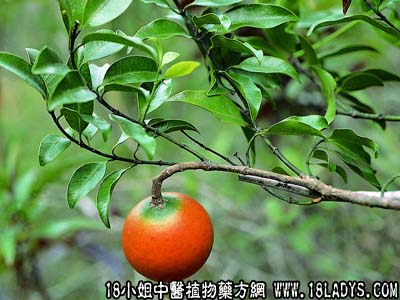

山橙(中草药名称:山橙)(科目:夹竹桃科)

植物名：山橙。
生长环境：本品为扳援状灌木，是我国南部山野间常见的野生植物，尤以海南为多，广州亦哟偶栽培供欣赏用。
分布：广东各地。
入药部分：果。
采集期：冬季。
自采地点：山岗。
行为：性平、味苦。
功能：化气、止痛。
主治、用量和用法：1、小肠气痛：干用5钱至1两，猪瘦肉适量，煎服；2、痰火核；3、大颈泡；4、胃气痛：均用法同1。
（方歌）小小山橙化气强，小肠疝气服之良，痰核颈泡胃气痛，瘦肉同煲效更彰。
本文解释权归中药大全，本文地址： https://www.daquan.com/post/1756.html